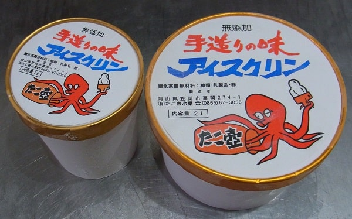

Самая странная японская еда
Натто
Натто - типичное блюдо японской кухни, представляющее собой ферментированные (иными словами, сброженные) соевые бобы. Японцы обычно едят натто по утрам, т.к. на самом деле, эта еда полна витаминов и полезных питательных веществ!
Мороженое со вкусом... осьминога
В Японии вы можете попробовать мороженое со вкусом васаби, сакэ, креветки, тофу, мисо и еще массу других видов.
